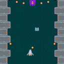

Table of contents

はじめに
前回は、敵の波状攻撃を実装しました。今回は、ゲームにサウンドをつけます。
サウンド素材の読み込み
画像と同じようにアセットとして読み込みます。
// サウンド
sound: {
'bgm': 'https://cdn.jsdelivr.net/gh/alkn203/phina-shooting-tutorial@master/work/assets/game_maoudamashii_4_vehicle03.mp3',
'shot': 'https://cdn.jsdelivr.net/gh/alkn203/phina-shooting-tutorial@master/work/assets/se_maoudamashii_battle_gun05.mp3',
'explosion': 'https://cdn.jsdelivr.net/gh/alkn203/phina-shooting-tutorial@master/work/assets/se_maoudamashii_explosion06.mp3',
},
サウンド素材は魔王魂から拝借しました。
BGMをつける
- phina.jsでサウンドを扱うには、SoundManagerクラスを使用します。
- BGMのようにループするサウンドの場合は、playMusicメソッドを使います。
- デフォルトでは、ループする設定になってます。
- メインシーンのコンストラクタなど好きな場所に追加して下さい。
// BGM再生
SoundManager.playMusic('bgm');
プレイヤーにショット音をつける
- ショット音は一回毎に再生する必要がありますので、playメソッドを使います。
- 弾生成と同時に音を再生するようにPlayerBulletクラスのコンストラクに処理を追加しています。
/*
* プレイヤーの弾クラス
*/
phina.define("PlayerBullet", {
// 継
superClass: 'Sprite',
// 初期化
init: function() {
// 親クラス初期化
this.superInit('bullet', 64, 64);
// スピード
var speed = 10;
// 当たり判定用のコライダー
this.collider = Collider({
width: 10,
height: 30,
}).addChildTo(this);
// 上向き速度を与える
this.physical.velocity.y = -speed;
// ショット音再生
SoundManager.play('shot');
},
爆発音をつける
爆発音もショット音と同じように実装します。
/*
* 爆発クラス
*/
phina.define("Explosion", {
// 継承
superClass: 'Sprite',
// 初期化
init: function(param) {
// 親クラス初期化
this.superInit('explosion', 64, 64);
// フレームアニメーションをアタッチ
this.anim = FrameAnimation('explosion').attachTo(this).gotoAndPlay('explosion');
// 爆発音再生
SoundManager.play('explosion');
},
実行サンプル
参考記事
PCでは特に設定なしに音が出ると思いますが、スマホでの音の再生や他のメソッドの説明など、phina.jsのサウンドのTipsは、以下の記事が参考になると思いますので、是非チェックしてみて下さい。
- phina.jsで音ゲーを作ってみる【前編】 by [pentamaNia](https://twitter.com/ptmniaさん
- [phina.js] サウンドの操作について by [ほろほろり](https://twitter.com/_horo_hororiさん